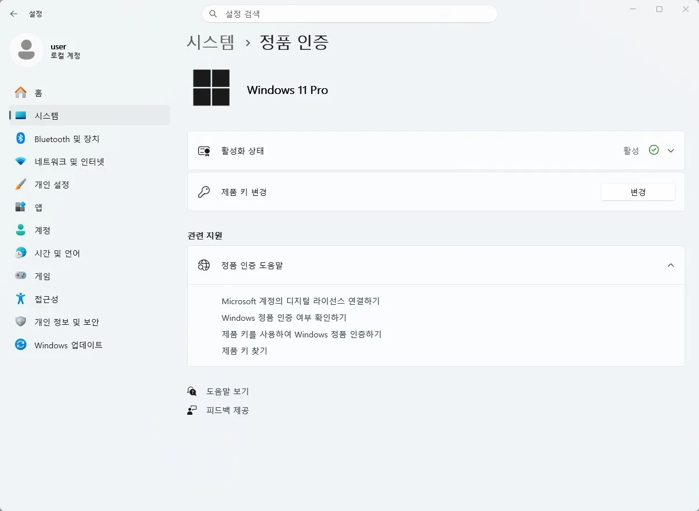
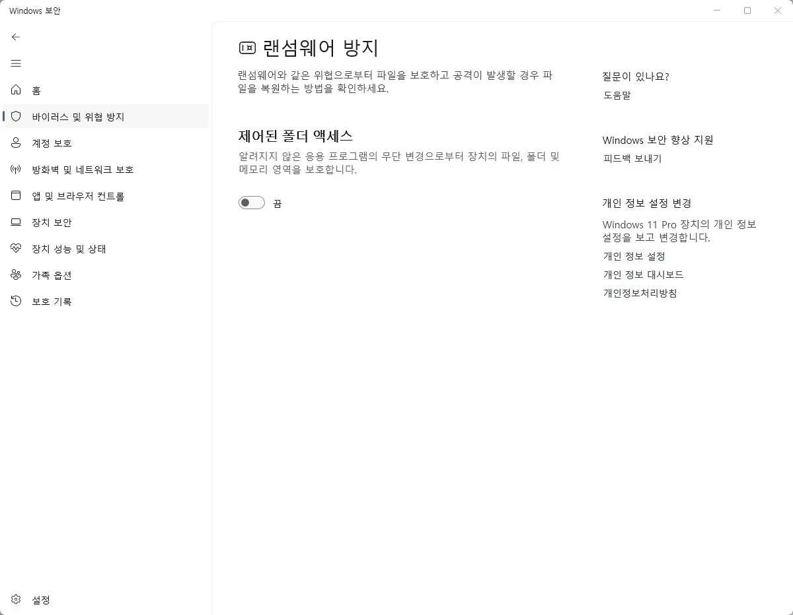

권한·인증 오류
우회보다 계정·출처·복구 수단을 먼저 확인하세요
권한 오류는 관리자 권한을 무조건 부여하거나 보안 기능을 끄는 것으로 해결하면 안 됩니다. 오류가 난 앱·폴더·계정의 범위를 먼저 확인하세요.
0x80070522 · 필요한 권한이 없습니다
0x80090016 · TPM·인증 키 세트가 없습니다
0x8009030D · 자격 증명을 인식하지 못했습니다
0x8009030E · 사용할 자격 증명이 없습니다
제어된 폴더 액세스 차단 · 앱이 파일을 저장하지 못함
설정 화면에서 확인할 것
정품 인증 상태와 보호 폴더 설정은 설정 화면에서 바로 확인할 수 있습니다. 인증 오류라면 활성화 상태를, 파일 변경이 막힌다면 랜섬웨어 방지 설정을 먼저 보세요.


공통 주의사항
- 회사·학교 계정의 자격 증명·인증서·기기 등록을 임의로 지우기 전 IT 관리자에게 확인하세요.
- TPM을 지우기 전에는 BitLocker 복구 키와 대체 로그인 방법을 반드시 확보하세요.
- Windows 보안에서 앱을 허용할 때는 차단된 실행 파일의 경로와 공식 출처를 확인하세요.